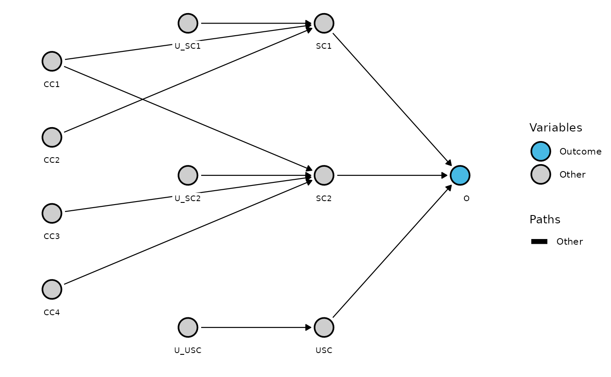
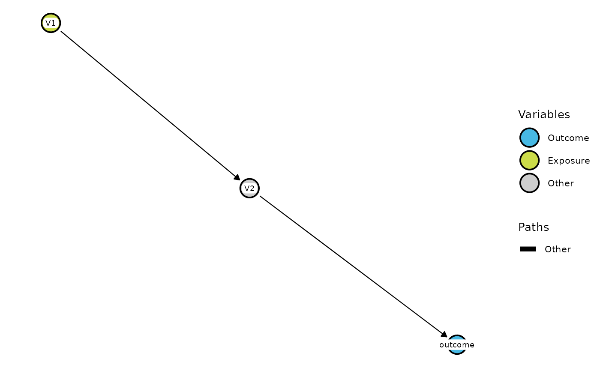

Creates a ggplot from a dagitty object, using packages dagitty and ggdag. Mimics format and colors used on the dagitty homepage
https://www.dagitty.net. Please note the recommendation in argument label_shift below: Getting the values for label_shift right can be an iterative
and slightly tedious procedure. It is highly recommended to evaluate the result of the current values already in the saved plot using,
e.g., ggsave and not in the RStudio Viewer.
Usage
plot_dag(
dag,
node_outc = NULL,
node_expo = NULL,
node_adj = NULL,
node_latent = NULL,
path_causal = NULL,
path_biased = NULL,
label = NULL,
label_shift = NULL,
label_size = 2.5,
node_size = 7,
node_stroke = 1,
e_w = 0.4,
cap_mm = 4,
scc = FALSE,
scc_size = c(0.1, 0.35),
scc_shift = c(0, 0),
scc_angle = 0
)Arguments
- dag
An object of class
dagitty. Can be created by usingdagitty::dagitty('[model_code]')orscc_to_dag(). If your DAG has been created byscc_to_dag(), make sure to pass only the first element (nameddag) toplot_dag.- node_outc
A single element of type character or NULL (default). If the outcome has not yet been specified in
dag, it can be done here by specifiying the name of the corresponding node.- node_expo
A single element of type character or NULL (default). If the exposure has not yet been specified in
dag, it can be done here by specifiying the name of the corresponding node.- node_adj
A character vector or NULL (default). Specify the names of nodes that should be defined as "adjusted".
- node_latent
A character vector or NULL (default). Specify the names of nodes that should be defined as "latent".
- path_causal
A character vector or NULL (default). Specify the names of the paths in format "V1->V2" that should be defined as "causal".
- path_biased
A character vector or NULL (default). Specify the names of the paths in format "V1->V2" that should be defined as "biased".
- label
A named character vector or NULL (default). Change the name of nodes in the graph, i.e., labels. The vector elements correspond to the new names, the vector names correspond to the old node names, i.e.,
label = c(old_name = "new_name").- label_shift
A named list (with all elements being numerical vectors of length 2) or NULL (default). Numerical values are used to move the labels of the corresponding nodes in x and y direction, respectively. The list names correspond to the nodes to which the values apply. Possible list names are the node names (initial names prior to changing them via
label), node types, i.e.,outcome,exposure,adjusted,latent, andother, as well asall, which applies to all nodes. If a node is addressed by several entries, e.g., its name andall, all entries are summed up. See the example below. Getting the values forlabel_shiftright can be an iterative and slightly tedious procedure. It is highly recommended to evaluate the result of the current values already in the saved plot using, e.g.,ggsaveand not in the RStudio Viewer.- label_size
A single numeric value, which controls the font size of the label. Default is 2.5.
- node_size
A single numeric value, which controls the size of the circle that represents the node. Default is 7.
- node_stroke
A single numeric value, which controls the size of the black border around the node circles. Default is 1.
- e_w
A single numeric value, which controls edge width. Default is 0.4.
- cap_mm
A single numeric value, which controls the distance, i.e., white space, between when the node ends and the edge begins/ the edge ends and the node begins. Higher values correspond to shorter edges/arrows. Default is 4.
- scc
TRUE or FALSE (default). Only applies to DAGs that are based on sufficient-component cause (SCC) models. If TRUE, an ellipse is added to the DAG, which should surround all sufficient cause variables, if they are a determinative set of sufficient causes, as suggested by VanderWeele and Robins (2007). If the DAG is not based on a SCC, leave
sccat FALSE.- scc_size
A numeric vector of length 2, which controls the size of the ellipse. Default is c(0.1, 0.35).
- scc_shift
A numeric vector of length 2, which controls the shift of the complete ellipse in x and y direction. Default is c(0, 0).
- scc_angle
A single numeric value, which controls rotiation of the ellipse in degree units. Default is 0.
References
VanderWeele TJ, Robins JM (2007): Directed acyclic graphs, sufficient causes, and the properties of conditioning on a common effect. American Journal of Epidemiology 166 (9): 1096–1104.
See also
scc_to_dag()for creating DAGs from SCC modelsSCC modelsfor more information on SCC models
Examples
# Transform SCC model into a DAG
dag <- scc_to_dag(scc_rain)[["dag"]]
# Plot DAG
plot_dag(dag, label_shift = list(all = c(0,0.15), outcome = c(0.05,0)))

# plot_dag() works also with dagitty objects created in other ways
dag_to_plot <- dagitty::dagitty('dag {
bb="-2.628,-2.412,2.659,2.378"
V1 [pos="-2.128,-1.912"]
V2 [pos="-0.031,0.035"]
V3 [pos="2.159,1.878"]
V1 -> V2
V2 -> V3
}')
plot_dag(dag_to_plot, node_outc = "V3", node_expo = "V1", label = c(V3 = "outcome"))
